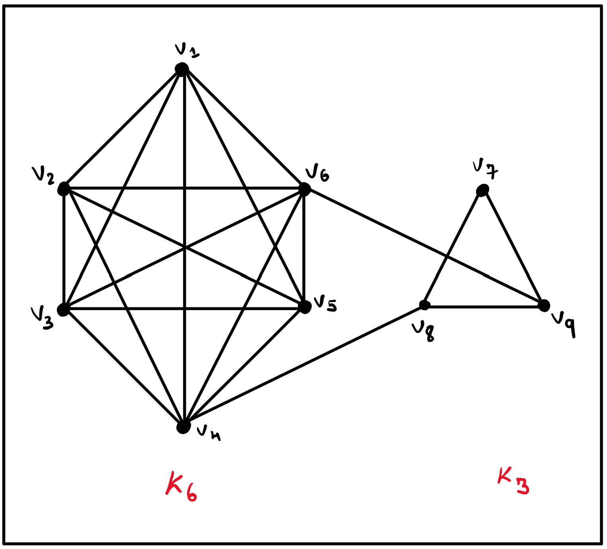
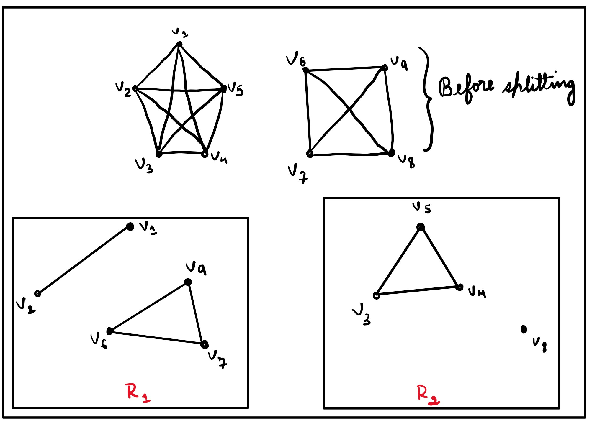

Before You Dive In:
I came across this problem about a week ago or something through Grozev's Post where he was speaking about the MOHS hardness scale proposed by Evan Chen. I had taken a screenshot of the problem and today I pondered on it. It's quite obvious that you would likely be tempted to grab some graphs.
Evan Chen had given this problem a whopping \(50M\) and I believe it's the highest rating! But Grozev was trying to be generous to give it \(35M\). He also mentioned the fact that rating is mostly subjective and debatable which I completely agree with. Ohh so coming back to my thing, this problem seemed very interesting as I love using graphs. It was also not too late to be cognizant of the fact that this problem really is not that of a beefy guy. You will feel it very intuitive and trivial when you take a look at the problem several times. I suppose, Chen was trolling me(us) or something. Or maybe the fact that "rating is a subjective matter"...
Problem 3.[IMO 2007] In a mathematical competition some competitors are friends. Friendship is always mutual. Call a group of competitors a clique if each two of them are friends. (In particular, any group of fewer than two competitors is a clique.) The number of members of a clique is called its size. Given that, in this competition, the largest size of a clique is even, prove that the competitors can be arranged in two rooms such that the largest size of a clique contained in one room is the same as the largest size of a clique contained in the other room.
Solution. So as I mentioned the main weapon is graphs. Let me say that \(\mathfrak{G}(V,E)\) be a graph \(\ni |V|=n\) and \(e\in E\) represents friendship. Here \(n\) is the number of competitors.
At first, all the contestants were having a talk on the fact that "when will Samay post a Stand-Up" in the foyer. After that, they are divided by a wall. Let me just say that the clique with the max size is \(\mathfrak{Q}_{max}\). Aslo just for my convenience let \(|\mathfrak{Q}_{max}|=s_{max}\). And it's mentioned that the largest size of a clique is even. Consider the below graph:

Also let me say that \(R_1,R_2\in \mathfrak{G}\) where \(V_{R_1}\cap V_{R_2}=\phi\). Yes, \(R_1\) corresponds to room one and \(R_2\) for room two. I shall consider the foyer itself as \(R_1\). So in the first step a clique of \(K_6\) with size \(\frac{6}{2}=3\) is put into \(R_2\) and let that clique be \(Q_2\) also the other half which is still in \(R_1\) be \(Q_1\). If \(\exists\) \(Q_i\in R_1 \ni |V_{Q_i}|>3\), and \(|V_{Q_i}|-|V_{Q_1}|=m\), here \(Q_i\) is the next largest clique after \(\mathfrak{Q}_{max}\) contained in \(R_1\). We then take a clique of order \(m\) out of \(Q_1\) and then place it in \(R_2\). If \(|V_{Q_2}|\ge |V_{Q_i}|\), all these shit shall not be considered(what I mean is about the taking out of \(m\) vertices stuff).
We are pretty much done except for replacing this particular case that I considered with a general case. Also notice that even number-sized cliques don't contribute anything in particular. Let me give you one example:

Check and try out some more examples similar to this. If the largest-sized clique in \(\mathfrak{G}\) is not unique then all these shit need not be considered ∎
My Views:
I still didn't get the fact why the problem is focusing on \(s_{max}\equiv 0(\)mod \(2)\)! Please do let me know why it's so. Grozev, if you ever happen to come across this post then it's my greatest pleasure, Sir. There has been a whole lot of discussions about this problem on AoPS, you can check that out to. I had seen a post on Math-Stackexchange, where a guy was suggesting to prove this using group-theory. I do not know group theory, but would definitely love to see the idea behind it. Please do let me know about the errors in my proof or typos it any.
References: